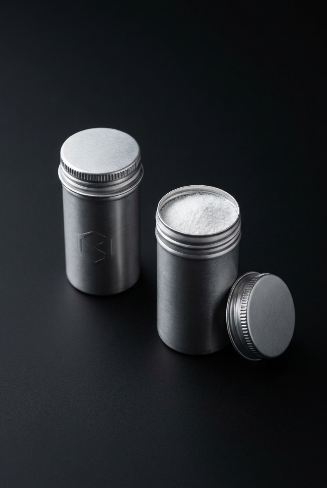

The chain, made physical
Most supplement brands white-label and don't actually know their own supply chain. Signal's edge is the opposite: because NNB manufactures several of our actives in-house, we can credibly claim single-origin, traceable-to-the-lot inputs. Provenance isn't a slogan here — it's the supply chain made physical.
The one thing to take away
This doc is the operating plan for that: who makes what, the facility and certification decisions made upstream (before the first lot), the per-lot testing that produces the keystone COA, and the SuppCo readiness checklist we build to.
Much of the finished-goods chain is a Zone Halo two-day decision and is marked Pending — a working value is a placeholder, never a commitment. It ladders to Foundation Brief §07; if anything here contradicts the brief, the brief wins.
Use the chapters on the left, or step through with Next →
The operating principle — own the chain
Everything here serves one rule: we can trace what we sell back to its source.
- Know our own supply chain. The industry norm is to white-label a finished product and trust a contract manufacturer's word. We refuse that. If we can't trace an input to its lot and its maker, it doesn't go in.
- Single-origin where it counts. Because NNB makes several of our actives in-house, the provenance claim is structural, not marketing — same maker, traceable lot, no broker in the middle (see §2).
- Build to the bar, don't retrofit to it. Certifications, testing, and traceability are decided at the factory and first-lot stage (§4–§6). Retrofitting a cert or a tested lot later is far costlier — and for a trust brand, a gap found after launch is reputational, not just operational.
- Honest about what's not yet decided. The finished-goods chain — who manufactures the chew, who fills and seals, who fills the tins — is largely a Zone Halo two-day decision. We mark it Pending rather than invent a supplier, a cost, or a lead time.
The ingredient house — NNB & the actives
Where the maker is NNB, the input is single-origin and traceable to the lot; where it isn't, the branded form is the provenance anchor.
| Cellular job | Active — branded form | Maker | Provenance |
|---|---|---|---|
| Energy carrier | Ubiquinol — Kaneka QH™ | Kaneka | Branded-form anchor |
| Mitochondrial cofactor | PQQ — BioPQQ™ | Mitsubishi | Branded-form anchor |
| Cellular protection | Ergothioneine — MitoPrime® | NNB | Single-origin, in-house |
| Cellular renewal | Spermidine — Puremidine® | NNB | Single-origin, in-house |
| Foundational mineral | Magnesium — Albion® bisglycinate | Balchem (Albion) | Branded-form anchor |
| Felt layer (protected) | Rhodiola — RhodioPrime® 6X or SalidroPure® | NNB | Single-origin · form Pending |
| Creatine SKU (separate) | Creatine — NNB PurestCreatine™ | NNB | Single-origin · purity vs Creapure Pending |
The working set, not the final set. Forms here are the working choices; final doses and the final active count are locked at the Zone Halo two-day, and the count will likely be trimmed (minimum dosage, maximum provable effect — see doc 02). This table is supply-chain provenance, not the formula spec. The single-origin NNB share is the part of the provenance claim we can defend hardest.
The manufacturing chain — input to finished unit
Several links are still a Zone Halo decision.
Flagship chew
Formulate (Zone Halo two-day: doses, count, chew-stability, the felt-active form) → chew manufacture at a cGMP facility Pending — facility → single-serve sachet fill & seal (barrier film that protects the chew; not a tub) → vessel + kraft mailer assembly into the 30-unit counter vessel.
Pure-creatine trust SKU
NNB PurestCreatine → tin fill & seal into the dose-sized single-use aluminum tin, twist-off cap + dry-seal liner (no PVC) Pending — tin filler → assembled into the 30-tin "cellular unit." The stability gate governs this whole line: creatine hydrolyzes to creatinine in moisture, so the seal must hold label claim to end of shelf life. That gate is the entire reason the tin exists (doc 02 §4).

Make-vs-buy, stated honestly: NNB is the ingredient house. The finished-goods manufacturer(s) — who makes the chew, who fills the sachets, who fills the tins — are not yet selected; that selection is gated on the Zone Halo formulation work (a chew's manufacturability depends on the final formula). We don't name a co-manufacturer we haven't chosen.
Facility & certification — the upstream decision
This is the decision docs 04 and 05 both point to as "upstream."
- cGMP facility, non-negotiable. The manufacturing site must be cGMP-certified (NSF / UL / Eurofins-type). This is the base of the SuppCo "Manufacturing Standards" category and the floor for every downstream partner (Fullscript requires annually-renewed third-party cGMP).
- One sport certification — NSF Certified for Sport is the priority. Over Informed Sport, because a meaningful share of the veteran/tactical revenue audience is drug-tested or trains alongside people who are (doc 04 §2). For them the sport cert is a purchase driver, not polish.
- Decide the cert before the first lot. Certified production has facility and process requirements; choosing a certified facility up front is one of the first manufacturing commitments. Retrofitting certification onto an already-running line is the expensive path.
- A failed cert or a mediocre score is permanent damage for us — worse than for a normal brand, because transparency is the pitch. So we earn the rating only when the label is certainly dead-accurate (post-COA, supply stable). We build to the cert here in operations; we activate it (submit, apply, publish) only when we can do so honestly — never at launch for hype.
Testing & the COA operation
This is the operational machine behind the keystone.
- Per-lot, full panel, ISO-17025. Every production lot gets an independent ISO-17025-accredited lab panel: identity, potency, purity, heavy metals. The lot-specific COA is the keystone that unlocks the rubric score, the sport cert, and the public proof page.
- Cadence is per-lot, not periodic. We test every lot, not a sample once a year. The cost of that cadence is a unit-economics line (doc 07); the payoff is a proof record that can't be faked.
- Input-not-finished where the format would distort the assay. For oxidation-sensitive inputs, a flavored/chewable finished unit can break some assays — so we test the source material and say so, rather than publish a finished-unit number the format makes meaningless (the TOTOX discipline, doc 05 §8).
- Proving the pathway — the method is open. The commitment is a locked edge of the moat: we prove absorption — what the body takes up — beyond a content-only COA. What's unsolved is the method — a credible, affordable absorption test (see flags).
The SuppCo readiness checklist — build to the bar
Every upload it asks for is something we must already have. So we build to it — so that filling it out later is just attaching documents we already hold.
| What SuppCo asks for | Our standing | Closed by |
|---|---|---|
| cGMP certification (NSF/UL/Eurofins) + upload | Not yet ours — a facility decision | §4 facility pick |
| Product certs — NSF Certified for Sport / Informed | Not yet — the sport-cert decision | §4 cert pick |
| ISO 17025:2017 lab + COA upload (purity, heavy metals, identity, potency) | Planned per-lot — the keystone | §5 lab pick + first lot |
| Product testing frequency | Per-lot (every lot) | §5 cadence — already decided |
| TESTED cert — off-shelf retail unit assays ≥95% of every label claim (active identity + potency) | The formula must carry overage to clear 95% through shelf life | Zone Halo two-day — overage spec per active |
| Clinically studied (RCT) link | None yet — the known soft spot | Funded by revenue, not dilution (later) |
The strategic read: only about one-fifth of the TrustScore is honesty (no proprietary blends, named forms, accurate doses) — that fifth we win by construction, though TESTED's 95%-off-shelf bar turns part of it into a hard stability requirement (overage), not just truthful labeling. The other four-fifths are procurement discipline decided in this doc. That makes "formulate to the rubric" a two-day-with-Zone-Halo decision, not a copywriting task. (Full intake-form contents held in reference; submission timing & mechanics live in doc 05 / the outreach pack — not here.)
- TrustScore — the algorithmic 10-point / 5-pillar rating (Manufacturing · Certifications · Quality Indicators · Testing · Innovation), built largely from public data plus the intake-form uploads. We formulate to it and upload to improve it.
- TESTED — a separate certification: SuppCo anonymously buys the retail unit off our own site and assays it at an ISO-17025 lab; it must hit ≥95% of every label claim, with annual retesting and analyte-level results published publicly. The shipped unit must pass — no special sample — so the formula carries overage, and the public read-out becomes a top-of-stack external proof (doc 05).
- Scoring levers we already hold or can cheaply add — patented/branded forms score positively (not just an honesty cost); artificial additives are penalized (our allulose / natural-sweetener choice is on-rubric); credentialed leadership (PhD/MD/ND/PharmD) scores under Innovation (the formulator's credential is a lever); USA manufacturing and broader certs (USP Verified, Non-GMO, Clean Label Project) are extra points at the §4 pick.
Packaging & materials
Packaging carries two jobs at once: protect the product (barrier, stability) and serve adherence (the counter vessel that stays in sight).


| Component | Spec | Status |
|---|---|---|
| Flagship unit | Single-serve, individually sealed sachet — barrier film that protects the chew (not a tub/bottle) | Locked form · film & supplier Pending |
| Counter vessel | Holds 30 daily packages; built to live on the counter and look good there (visibility = adherence) | Locked intent · material Pending |
| Creatine tin | Dose-sized single-use aluminum (~10 ml/5 g), twist-off aluminum cap + dry-seal liner, no PVC | Locked · filler Pending |
| Outer | Kraft outer mailer | Locked intent |
- No "100% recyclable" / "reusable" / "sustainable" claims. Recyclable ≠ recycled, and small aluminum falls through most recycling streams. We name the liner material, make no mono-material claim, and make no take-back promise we can't keep. Honest packaging language is part of the same discipline as honest dosing.
Operating disciplines — what we refuse
- No white-label-and-pretend. We don't sell a finished product we can't trace. If we don't know the maker and the lot, it doesn't ship.
- No proprietary blend, ever. Every active and its dose is disclosed (doc 03 claims law). A trade secret may cover a process, never a dose or an ingredient (doc 05 §8).
- Build to cert, don't retrofit. Facility and certification are first-lot decisions, not post-launch patches.
- Never quietly under-dose. When taste and dose-honesty collide, we move mass out of the chew or trim transparently — we never silently cut a dose to fix the format (doc 02).
- The stability gate is absolute. Creatine ships only in a seal that holds label claim to end of shelf life. Stability over convenience, every time — it's a health product.
- Test honestly. Per-lot, independent, and input-not-finished where the format would distort the number. We never publish a test result we know is meaningless.
- Finished-goods manufacturer(s) — the chew co-manufacturer, the sachet fill/seal partner, and the tin filler are unselected; gated on Zone Halo formulation (manufacturability depends on the final formula).
- Facility + cert stack — pick the cGMP/NSF facility, the per-lot ISO-17025 lab, and one sport cert (NSF Certified for Sport priority). The single upstream decision that clears SuppCo + Fullscript at once.
- Creatine purity — NNB PurestCreatine vs Creapure, independently verified head-to-head.
- Rhodiola branded form — RhodioPrime 6X vs SalidroPure, plus dose and chew-stability (the felt layer).
- Proving the pathway — the method. The commitment is locked (a moat edge); what's open is which credible, affordable absorption test demonstrates uptake beyond a content-only COA.
- Packaging sourcing — barrier film, vessel material, tin filler, MOQs and lead times — all to be quoted (not invented here).
Source of truth → 01 Foundation Brief §07. Pulls from → 02 Product & Formula Spec (format, materials, the active set). Feeds → 05 Moat & Proof Plan (the COA + cert decisions made here become the proof) · 07 Unit Economics (per-lot testing cost, COGS, facility/cert spend). Builds to → the SuppCo TrustScore intake (reference). Locked at → the Zone Halo two-day.